PROJECT TYPE
Service Design & Spatial Design & Business Innovation
PROJECT INTRODUCTION
In today's society, people often strive to demonstrate their social standing and influence through ostentatious displays following material consumption, thereby transforming expenditure into conspicuous consumption.
However, through my research, I have found that in recent times, people no longer find satisfaction in the extravagant costs linked to material consumption. Instead, they have focused on showcasing their refined taste and noble qualities. As a result, I devised a green fruit and vegetable market that enables people to set up stalls and sell alongside farmers.
This market incorporates the concept of parade by fostering competition among stallholders and customers regarding sales and purchasing power. Furthermore, the market's outer packaging emphasizes the social status of customers, thereby stimulating the desire to show off and engage in friendly competition. Through this project, I leverage people's inclination for parade, merging it with the principles of green consumption to cultivate a community of environmentally conscious individuals who take pride in their green consumption choices. Additionally, this initiative promotes the consumption of green fruits and vegetables while assisting farmers in addressing the issue of surplus produce that would otherwise go to waste.
PROJECT IMAGES
 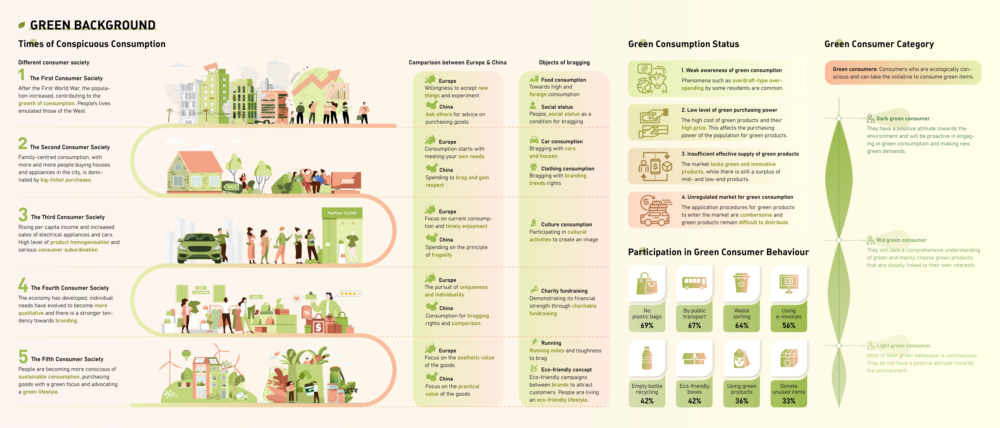
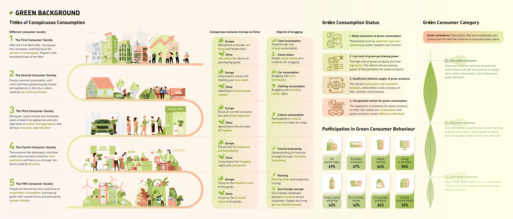
 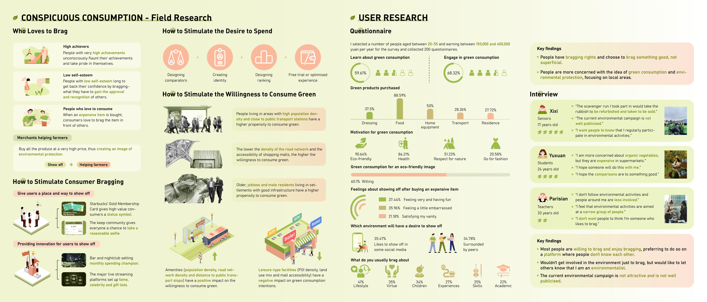
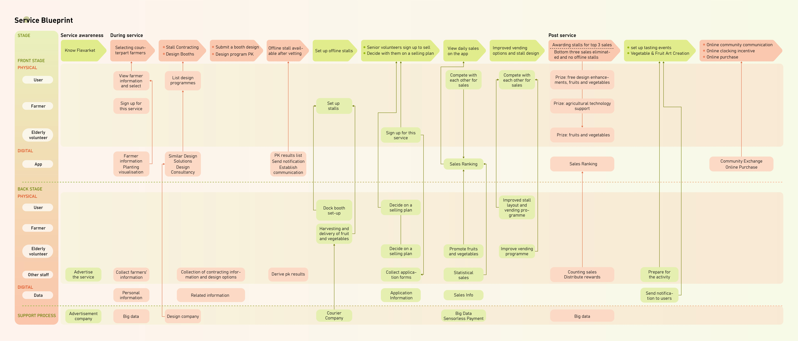
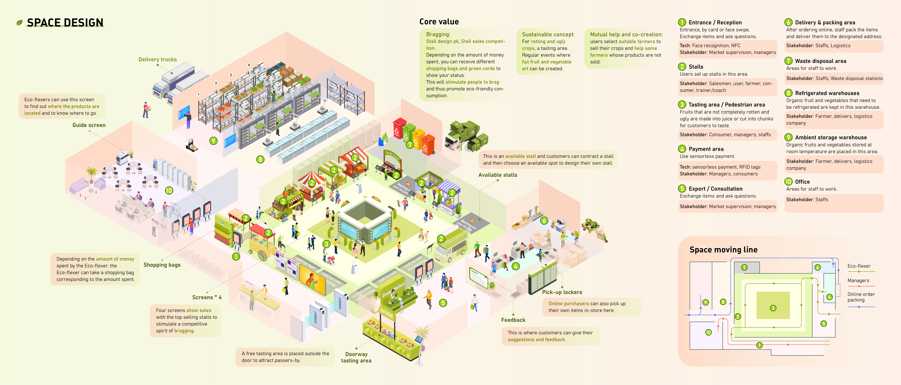
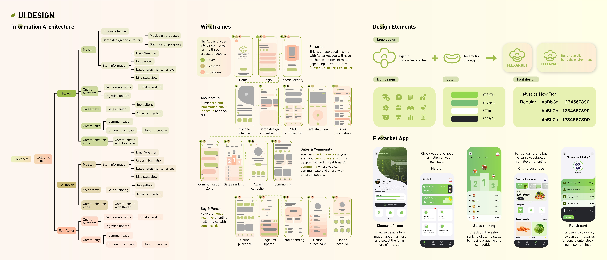
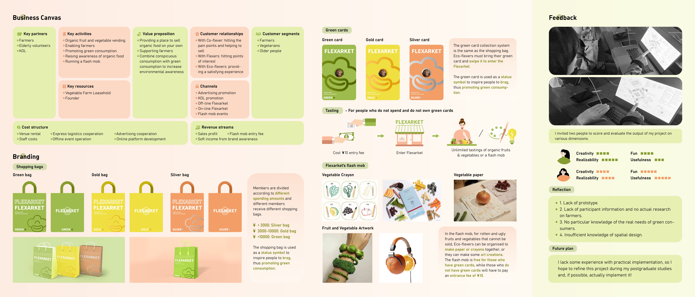
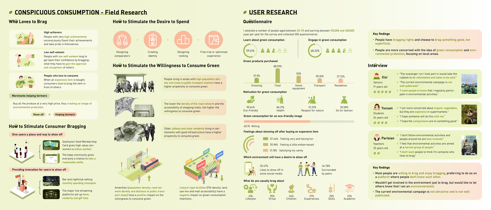
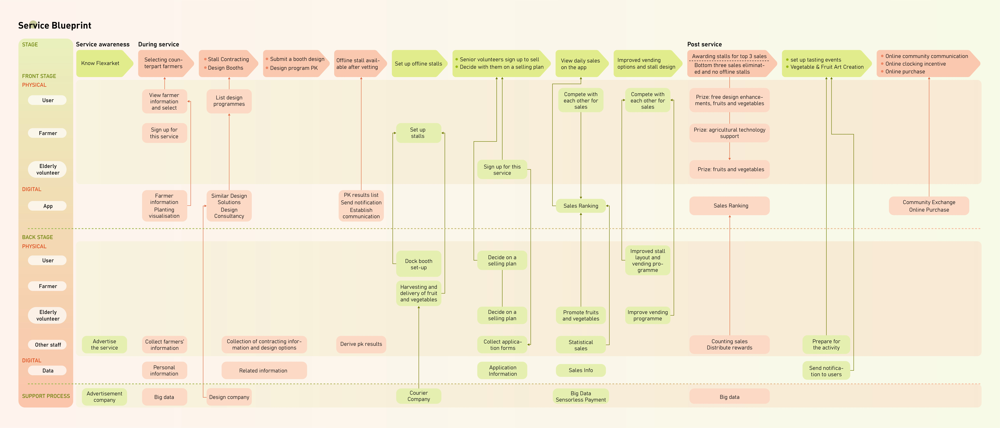
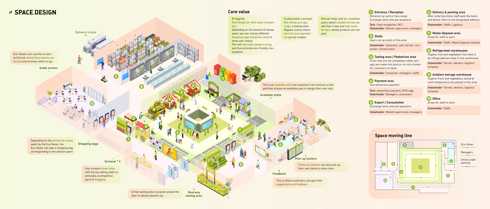
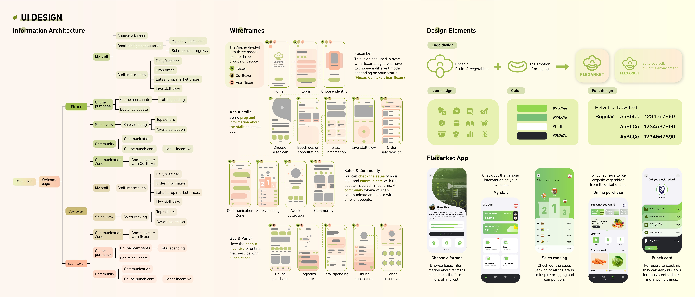
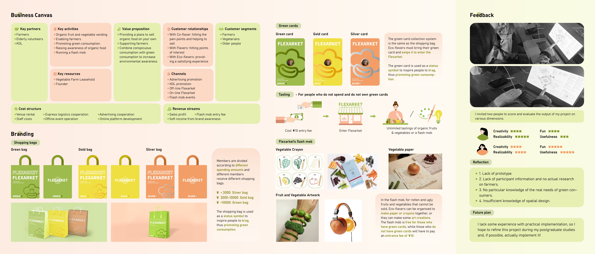